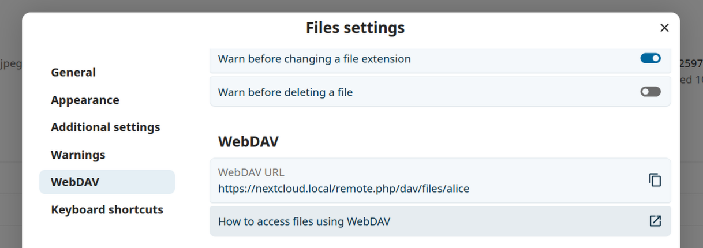
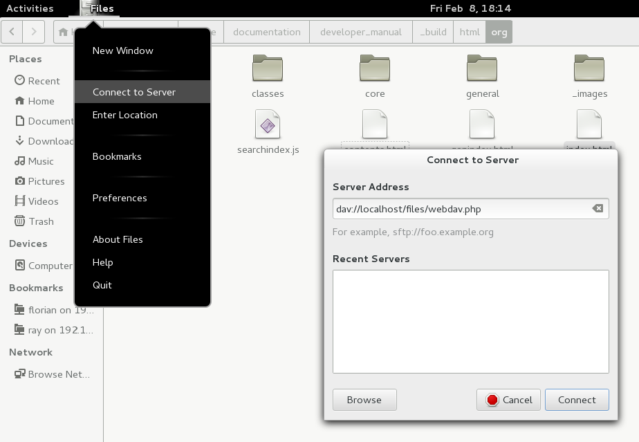
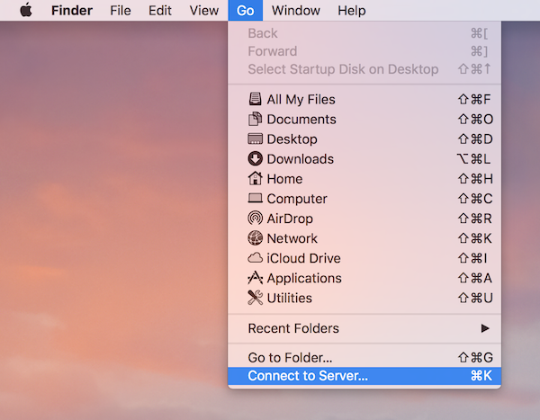
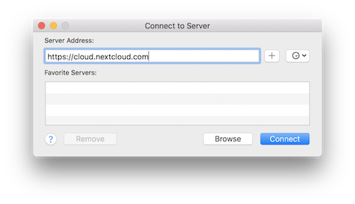
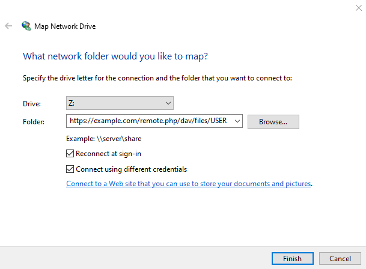

Accesarea fișierelor Nextcloud prin WebDAV
Nextcloud acceptă pe deplin protocolul WebDAV, așa că te poți conecta la Fișiere Nextcloud și te poți sincroniza cu ele prin WebDAV. Acest capitol explică cum să conectezi la serverul Nextcloud dispozitive Linux, macOS, Windows și mobile.
WebDAV înseamnă Distributed Authoring and Versioning (creare și versionare distribuită). Este o extensie a HTTP care face ușoară crearea, citirea și editarea fișierelor găzduite pe servere web la distanță. Cu un client WebDAV, îți poți accesa fișierele Nextcloud (inclusiv partajările) pe Linux, macOS și Windows la fel ca orice partajare de rețea la distanță și poți rămâne sincronizat.
Înainte să configurezi WebDAV, citește care este modul recomandat de a conecta dispozitivele client la Nextcloud.
Clienții oficiali Nextcloud pentru desktop și mobil
Modul recomandat de a sincroniza un calculator cu un server Nextcloud este folosirea clienților oficiali de sincronizare Nextcloud. Poți configura clientul să salveze fișierele în orice dosar local și poți alege ce dosare de pe serverul Nextcloud să sincronizezi. Clientul afișează starea curentă a conexiunii și înregistrează toată activitatea, așa că știi mereu ce fișiere de pe server au fost descărcate pe calculator și poți verifica dacă fișierele create și actualizate local sunt sincronizate corect cu serverul.
Modul recomandat de a sincroniza dispozitivele Android și Apple iOS este folosirea aplicațiilor mobile oficiale Nextcloud.
Pentru a conecta aplicațiile oficiale Nextcloud la un server Nextcloud, folosește același URL pe care îl folosești pentru a accesa Nextcloud din browser, de exemplu:
https://cloud.example.com
Dacă Nextcloud este instalat într-un subdosar numit „nextcloud”:
https://example.com/nextcloud
Clienți WebDAV terți
Dacă preferi, îți poți conecta calculatorul la serverul Nextcloud și cu orice client terț care acceptă protocolul WebDAV (inclusiv cel integrat, eventual, în sistemul de operare).
Pentru a-ți conecta dispozitivul mobil la Nextcloud poți folosi și aplicații terțe compatibile cu WebDAV.
Când folosești clienți terți, ține cont că s-ar putea să nu fie optimizați pentru Nextcloud sau să nu aibă funcțiile importante pentru tine.
Printre clienții mobili folosiți, după cum au raportat membrii comunității Nextcloud, se numără:
URL-ul pe care trebuie să-l folosești când configurezi aplicații terțe pentru conectarea la Nextcloud este puțin mai lung decât cel pentru clienții oficiali:
https://cloud.example.com/remote.php/dav/files/USERNAME/
Dacă Nextcloud este instalat într-un subdosar numit „nextcloud”:
https://example.com/nextcloud/remote.php/dav/files/USERNAME/
Notă
Când folosești un client WebDAV terț (inclusiv clientul integrat în sistemul de operare), autentifică-te cu o parolă de aplicație în locul parolei obișnuite. Pe lângă securitatea mai bună, astfel crește semnificativ performanța. Pentru a configura o parolă de aplicație, autentifică-te în interfața web Nextcloud, dă clic pe avatar și alege Setări personale. Apoi alege Securitate în bara laterală stângă și derulează până jos. Acolo poți crea o parolă de aplicație (pe care o poți revoca ulterior fără să-ți schimbi parola principală).
Notă
În exemplele următoare, înlocuiește example.com/nextcloud cu URL-ul serverului Nextcloud (omite partea cu dosarul dacă instalarea se află în rădăcina domeniului), iar USERNAME cu numele de utilizator al celui care se conectează.
Găsești URL-ul WebDAV în contul Nextcloud, în Setări pentru Fișiere, la WebDAV.

Accesarea fișierelor din Linux
În sistemele de operare Linux poți accesa fișierele prin metodele următoare.
Managerul de fișiere Nautilus
Când îți configurezi contul Nextcloud în setările GNOME, fișierele vor fi montate automat de Nautilus ca partajare WebDAV, cu excepția cazului în care debifezi accesul la fișiere.
Poți monta fișierele Nextcloud și manual. Folosește protocolul davs:// pentru a conecta managerul de fișiere Nautilus la partajarea Nextcloud:
davs://example.com/nextcloud/remote.php/dav/files/USERNAME/
Notă
Dacă conexiunea la server nu este securizată prin HTTPS, folosește dav:// în loc de davs://:

Notă
Aceeași metodă funcționează și în alte manageri de fișiere care folosesc GVFS, precum Caja din MATE și Nemo din Cinnamon.
Accesarea fișierelor cu KDE și Dolphin
Mergi la System Settings -> Networking -> Online Accounts
Dă clic pe „Add Account…”
Dă clic pe Nextcloud
Introdu adresa serverului
Urmează instrucțiunile de pe ecran pentru a te autentifica
După autentificare, asigură-te că activezi „Storage” în secțiunea „Use This Account For”
Acum îți poți accesa fișierele în Dolphin, la „Network” în bara laterală
(Opțional) Pentru a adăuga această locație ca scurtătură în bara laterală, dă clic dreapta pe „Nextcloud Storage”, apoi pe „Add to Places”
(Opțional) Pentru a personaliza scurtătura, dă clic dreapta pe ea în bara laterală, apoi pe „Edit…” și modifică pictograma și eticheta
Crearea montărilor WebDAV din linia de comandă Linux
Poți crea montări WebDAV din linia de comandă Linux. Este util dacă preferi să accesezi Nextcloud la fel ca orice alt sistem de fișiere la distanță montat. Exemplul următor arată cum să creezi o montare personală care se montează automat de fiecare dată când te autentifici pe calculatorul Linux.
Instalează driverul de sistem de fișiere WebDAV
davfs2, care îți permite să montezi partajări WebDAV la fel ca orice alt sistem de fișiere la distanță. Folosește această comandă pentru a-l instala pe Debian/Ubuntu:apt-get install davfs2
Folosește această comandă pentru a-l instala pe CentOS, Fedora și openSUSE:
yum install davfs2
Adaugă-te în grupul
davfs2:usermod -aG davfs2 <username>
Notă
Dacă grupul davfs2 nu există după instalarea pachetului, s-ar putea să trebuiască să-l creezi singur și, eventual, să ajustezi fișierul de configurare davfs ca să folosească grupul creat.
Apoi creează în dosarul personal un dosar
nextcloudpentru punctul de montare și dosarul.davfs2/pentru fișierul de configurare personal:mkdir ~/nextcloud mkdir ~/.davfs2
Copiază
/etc/davfs2/secretsîn~/.davfs2:cp /etc/davfs2/secrets ~/.davfs2/secrets
Setează-te ca proprietar și restrânge permisiunile la citire-scriere doar pentru proprietar:
chown <linux_username>:<linux_username> ~/.davfs2/secrets chmod 600 ~/.davfs2/secrets
Adaugă la sfârșitul fișierului
secretsdatele de autentificare Nextcloud, adică URL-ul serverului Nextcloud, numele de utilizator și parola:https://example.com/nextcloud/remote.php/dav/files/USERNAME/ <username> <password> or $PathToMountPoint $USERNAME $PASSWORD for example /home/user/nextcloud john 1234
Adaugă informațiile de montare în
/etc/fstab:https://example.com/nextcloud/remote.php/dav/files/USERNAME/ /home/<linux_username>/nextcloud davfs user,rw,auto 0 0
Apoi verifică montarea și autentificarea rulând comanda următoare. Dacă ai configurat totul corect, nu vei avea nevoie de permisiuni root:
mount ~/nextcloud
Ar trebui să poți și să o demontezi:
umount ~/nextcloud
De acum, de fiecare dată când te autentifici în sistemul Linux, partajarea Nextcloud ar trebui să se monteze automat prin WebDAV în dosarul ~/nextcloud. Dacă preferi să o montezi manual, schimbă auto în noauto în /etc/fstab.
Probleme cunoscute
Problemă
Resource temporarily unavailable (resursă temporar indisponibilă)
Soluție
Dacă ai probleme la crearea unui fișier în dosar, editează /etc/davfs2/davfs2.conf și adaugă:
use_locks 0
Problemă
Avertismente legate de certificat
Soluție
Dacă folosești un certificat autosemnat, vei primi un avertisment. Pentru a evita acest lucru, trebuie să configurezi davfs2 să-ți recunoască certificatul. Copiază mycertificate.pem în /etc/davfs2/certs/. Apoi editează /etc/davfs2/davfs2.conf și decomentează linia servercert. Acum adaugă calea certificatului, ca în acest exemplu:
servercert /etc/davfs2/certs/mycertificate.pem
Accesarea fișierelor din macOS
Pentru a accesa fișierele din Finder pe macOS:
Din bara de meniu Finder, alege Mergi > Conectare la server…:

Când se deschide fereastra Conectare la server…, introdu adresa WebDAV a serverului Nextcloud în câmpul Adresă server:, de exemplu:
https://cloud.YOURDOMAIN.com/remote.php/dav/files/USERNAME/

Dă clic pe Conectează. Serverul WebDAV ar trebui să apară pe desktop ca disc partajat.
Accesarea fișierelor din Microsoft Windows
Dacă folosești implementarea WebDAV nativă din Windows, poți mapa Nextcloud ca unitate nouă din Windows Explorer. Maparea ca unitate îți permite să răsfoiești fișierele stocate pe un server Nextcloud la fel ca pe cele de pe o unitate de rețea mapată.
Această funcție necesită conexiune la rețea. Dacă vrei să-ți păstrezi fișierele offline, folosește clientul pentru desktop ca să sincronizezi toate fișierele din Nextcloud cu unul sau mai multe dosare de pe discul local.
Notă
În Windows 10, autentificarea de bază (Basic Authentication) este permisă implicit dacă HTTPS este activat înainte de maparea unității.
În versiunile mai vechi de Windows, trebuie să permiți folosirea autentificării de bază în registrul Windows:
pornește
regeditși mergi laHKEY_LOCAL_MACHINE\SYSTEM\CurrentControlSet\Services\WebClient\Parameters.Creează sau editează valoarea
DWORDBasicAuthLevel(Windows Vista, 7 și 8) sauUseBasicAuth(Windows XP și Windows Server 2003) și setează-i datele la1pentru conexiuni SSL. Valoarea0înseamnă că autentificarea de bază este dezactivată, iar valoarea2permite atât conexiuni SSL, cât și conexiuni fără SSL (nerecomandat).Apoi închide Editorul de registry și repornește calculatorul.
Maparea unităților din linia de comandă
Exemplul următor arată cum să mapezi o unitate din linia de comandă. Pentru a mapa unitatea:
Deschide un prompt de comandă în Windows.
Introdu în promptul de comandă linia următoare pentru a mapa la unitatea Z a calculatorului:
net use Z: https://<drive_path>/remote.php/dav/files/USERNAME/ /user:youruser yourpassword
unde <drive_path> este URL-ul serverului Nextcloud. De exemplu:
net use Z: https://example.com/nextcloud/remote.php/dav/files/USERNAME/ /user:youruser yourpassword
Calculatorul mapează fișierele contului Nextcloud la litera de unitate Z.
Eroare
Dacă primești eroarea System error 67 has occurred. The network name cannot be found. sau ai deconectări frecvente, deschide aplicația Servicii și asigură-te că serviciul WebClient rulează și pornește automat la pornirea sistemului.
Notă
Deși nu este recomandat, poți monta serverul Nextcloud și prin HTTP, lăsând conexiunea necriptată.
Dacă vrei să folosești conexiuni HTTP pe dispozitive aflate în locuri publice, îți recomandăm insistent un tunel VPN care să asigure securitatea necesară.
O sintaxă alternativă a comenzii este:
net use Z: \\example.com@ssl\nextcloud\remote.php\dav /user:youruser
yourpassword
Maparea unităților din Windows Explorer
Pentru a mapa o unitate din Microsoft Windows Explorer:
Deschide Windows Explorer pe calculatorul cu Windows.
Dă clic dreapta pe intrarea Computer și selectează Mapare unitate de rețea… din meniu.
Alege unitatea de rețea locală la care vrei să mapezi Nextcloud.
Specifică adresa instanței Nextcloud, urmată de /remote.php/dav/files/USERNAME/.
De exemplu:
https://example.com/nextcloud/remote.php/dav/files/USERNAME/
Notă
Pentru serverele protejate cu SSL, bifează Reconectare la conectare, ca maparea să se păstreze după reporniri. Dacă vrei să te conectezi la serverul Nextcloud ca alt utilizator, bifează Conectare utilizând acreditări diferite.

Dă clic pe butonul
Terminare.

Windows Explorer mapează unitatea de rețea, iar instanța Nextcloud devine disponibilă.
Accesarea fișierelor cu Cyberduck
Cyberduck este un browser open source pentru FTP, SFTP, WebDAV, OpenStack Swift și Amazon S3, conceput pentru transferul fișierelor pe macOS și Windows.
Notă
Acest exemplu folosește Cyberduck versiunea 4.2.1.
Pentru a folosi Cyberduck:
Specifică serverul fără protocol la început.
De exemplu:
example.comSpecifică portul potrivit.
Portul ales depinde de faptul că serverul Nextcloud acceptă sau nu SSL. Dacă vrei să folosești SSL, Cyberduck îți cere să selectezi alt tip de conexiune.
- De exemplu:
80pentru WebDAV necriptat443pentru WebDAV securizat (HTTPS/SSL)
Folosește meniul „More Options” pentru a adăuga restul URL-ului WebDAV în câmpul „Path”.
De exemplu:
remote.php/dav/files/USERNAME/
Acum Cyberduck îți permite accesul la fișierele de pe serverul Nextcloud.
Probleme cunoscute
Problemă
Accesul WebDAV este foarte lent sau expiră.
Soluție
Când folosești un client WebDAV terț (inclusiv clientul integrat în sistemul de operare), autentifică-te cu o parolă de aplicație în locul parolei obișnuite a contului. Parola obișnuită afectează semnificativ performanța, deoarece Nextcloud trebuie să facă verificări suplimentare la fiecare cerere. Parola de aplicație elimină acest efort suplimentar și poate îmbunătăți considerabil vitezele de transfer.
Pentru a crea o parolă de aplicație, autentifică-te în interfața web Nextcloud, dă clic pe avatar, alege Setări personale, apoi deschide secțiunea Securitate din bara laterală stângă și derulează până jos. Creează acolo o parolă de aplicație și folosește-o în clientul WebDAV în locul parolei principale.
Problemă
Windows nu se conectează prin HTTPS.
Soluția 1
Este posibil ca clientul WebDAV din Windows să nu accepte Server Name Indication (SNI) pe conexiunile criptate. Dacă primești o eroare la montarea unei instanțe Nextcloud criptate cu SSL, cere-i furnizorului o adresă IP dedicată pentru serverul cu SSL.
Soluția 2
Este posibil ca clientul WebDAV din Windows să nu accepte conexiuni TLSv1.1 și TLSv1.2. Dacă ai restricționat configurația serverului la TLSv1.1 și versiunile ulterioare, conexiunea la server poate eșua. Pentru mai multe informații, consultă documentația WinHTTP.
Problemă
Primești următorul mesaj de eroare: Error 0x800700DF: The file size exceeds the limit allowed and cannot be saved.
Soluție
Windows limitează dimensiunea maximă a fișierelor transferate de pe sau către o partajare WebDAV. Poți mări valoarea FileSizeLimitInBytes din HKEY_LOCAL_MACHINE\\SYSTEM\\CurrentControlSet\\Services\\WebClient\\Parameters dând clic pe Modificare.
Pentru a mări limita la valoarea maximă de 4 GB, selectează Zecimal, introdu valoarea 4294967295 și repornește Windows sau serviciul WebClient.
Problemă
După adăugarea unei unități WebDAV în Windows cu pașii de mai sus, nu este afișat spațiul disponibil corect din Nextcloud, ci dimensiunea și spațiul liber ale unității C:.
Răspuns
Din păcate, aceasta este o limitare a WebDAV, care nu oferă clientului o modalitate de a afla de la server spațiul liber disponibil. Windows afișează automat dimensiunea și spațiul liber ale unității C:. Nu există o soluție directă pentru această limitare.
Problemă
Accesarea fișierelor din Microsoft Office prin WebDAV eșuează.
Soluție
Problemele cunoscute și soluțiile lor sunt documentate în articolul KB2123563.
Problemă
Nextcloud nu poate fi mapat ca unitate WebDAV în Windows când se folosește un certificat autosemnat.
Soluție
Accesează instanța Nextcloud în browserul preferat.
Continuă până ajungi la eroarea de certificat din bara de stare a browserului.
Vizualizează certificatul, apoi, din fila Detalii, selectează „Copiere în fișier”.
Salvează fișierul pe desktop cu orice nume, de exemplu
myNextcloud.pem.Mergi la meniul Start > Executare, tastează MMC și dă clic pe „OK” pentru a deschide Microsoft Management Console.
Mergi la Fișier > Adăugare/eliminare snap-in.
Selectează Certificate, dă clic pe „Adăugare”, alege „Contul meu de utilizator”, apoi „Terminare” și, în final, „OK”.
Navighează până la Autorități de certificare rădăcină de încredere, Certificate.
Dă clic dreapta pe Certificate, selectează Toate activitățile, apoi Import.
Selectează certificatul salvat pe desktop.
Selectează Plasare toate certificatele în următorul depozit și dă clic pe Răsfoire.
Bifează caseta Afișare depozite fizice, extinde Autorități de certificare rădăcină de încredere, selectează acolo Computer local, dă clic pe „OK” și finalizează importul.
Verifică dacă certificatul apare în listă. Probabil va trebui să dai Reîmprospătare înainte să-l vezi.
Închide MMC.
Pentru utilizatorii Firefox:
Pornește browserul și mergi la meniul aplicației > Istoric > Șterge istoricul recent…
Selectează „Tot” în meniul „Perioadă de șters”
Bifează caseta „Autentificările active”
Dă clic pe butonul „Șterge acum”
Închide browserul, apoi redeschide-l și testează.
Pentru utilizatorii browserelor bazate pe Chrome (Chrome, Chromium, Microsoft Edge):
Deschide Panoul de control Windows și mergi la Opțiuni internet
În fila Conținut, dă clic pe butonul Golire stare SSL.
Închide browserul, apoi redeschide-l și testează.
Accesarea fișierelor cu cURL
Deoarece WebDAV este o extensie a HTTP, cURL poate fi folosit pentru scripturi de operații cu fișiere.
Notă
Setări → Administrare → Partajare → Permite utilizatorilor de pe acest server să trimită partajări către alte servere. Dacă această opțiune este dezactivată, trebuie să-i transmiți lui cURL opțiunea --header "X-Requested-With: XMLHttpRequest".
Pentru a crea un dosar cu data curentă ca nume:
$ curl -u user:pass -X MKCOL "https://example.com/nextcloud/remote.php/dav/files/USERNAME/$(date '+%d-%b-%Y')"
Pentru a încărca fișierul error.log în acel dosar:
$ curl -u user:pass -T error.log "https://example.com/nextcloud/remote.php/dav/files/USERNAME/$(date '+%d-%b-%Y')/error.log"
Pentru a muta un fișier:
$ curl -u user:pass -X MOVE --header 'Destination: https://example.com/nextcloud/remote.php/dav/files/USERNAME/target.jpg' https://example.com/nextcloud/remote.php/dav/files/USERNAME/source.jpg
Pentru a obține proprietățile fișierelor din dosarul rădăcină:
$ curl -X PROPFIND -H "Depth: 1" -u user:pass https://example.com/nextcloud/remote.php/dav/files/USERNAME/ | xml_pp
<?xml version="1.0" encoding="utf-8"?>
<d:multistatus xmlns:d="DAV:" xmlns:oc="http://nextcloud.org/ns" xmlns:s="http://sabredav.org/ns">
<d:response>
<d:href>/nextcloud/remote.php/dav/files/USERNAME/</d:href>
<d:propstat>
<d:prop>
<d:getlastmodified>Tue, 13 Oct 2015 17:07:45 GMT</d:getlastmodified>
<d:resourcetype>
<d:collection/>
</d:resourcetype>
<d:quota-used-bytes>163</d:quota-used-bytes>
<d:quota-available-bytes>11802275840</d:quota-available-bytes>
<d:getetag>"561d3a6139d05"</d:getetag>
</d:prop>
<d:status>HTTP/1.1 200 OK</d:status>
</d:propstat>
</d:response>
<d:response>
<d:href>/nextcloud/remote.php/dav/files/USERNAME/welcome.txt</d:href>
<d:propstat>
<d:prop>
<d:getlastmodified>Tue, 13 Oct 2015 17:07:35 GMT</d:getlastmodified>
<d:getcontentlength>163</d:getcontentlength>
<d:resourcetype/>
<d:getetag>"47465fae667b2d0fee154f5e17d1f0f1"</d:getetag>
<d:getcontenttype>text/plain</d:getcontenttype>
</d:prop>
<d:status>HTTP/1.1 200 OK</d:status>
</d:propstat>
</d:response>
</d:multistatus>
Accesarea fișierelor cu WinSCP
WinSCP este un client gratuit și open source pentru SFTP, FTP, WebDAV, S3 și SCP pe Windows. Funcția sa principală este transferul de fișiere între un calculator local și unul la distanță. WinSCP oferă și scripturi și funcții de bază pentru gestionarea fișierelor.
Poți descărca versiunea portabilă a WinSCP și o poți rula pe Linux prin Wine.
Pentru a rula WinSCP pe Linux, instalează Wine din managerul de pachete al distribuției, apoi rulează: wine WinSCP.exe.
Pentru a te conecta la Nextcloud:
Pornește WinSCP
Apasă „Session” în meniu
Apasă opțiunea de meniu „New Session”
Setează meniul „File protocol” la WebDAV
Setează meniul „Encryption” la TLS/SSL Implicit encryption
Completează câmpul pentru numele gazdei:
example.comCompletează câmpul pentru numele de utilizator:
NEXTCLOUDUSERNAMECompletează câmpul pentru parolă:
NEXTCLOUDPASSWORDApasă butonul „Advanced…”
Mergi la „Environment”, „Directories” în partea stângă
Completează câmpul „Remote directory” cu:
/nextcloud/remote.php/dav/files/NEXTCLOUDUSERNAME/Apasă butonul „OK”
Apasă butonul „Save”
Selectează opțiunile dorite și apasă butonul „OK”
Apasă butonul „Login” pentru a te conecta la Nextcloud
Notă
Dacă folosești TOTP, folosește o parolă de aplicație. La momentul scrierii (2022-11-07), WinSCP nu acceptă TOTP cu Nextcloud.